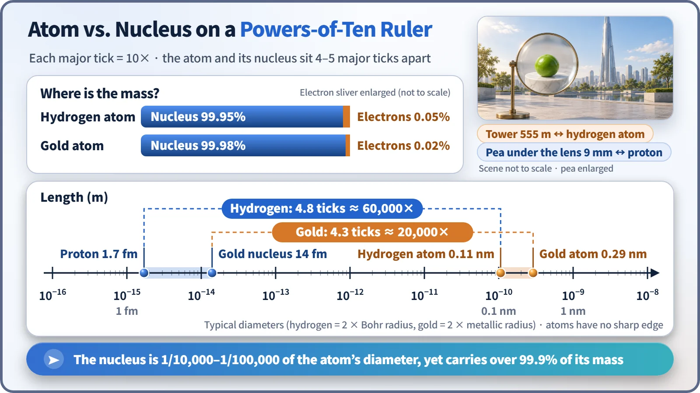
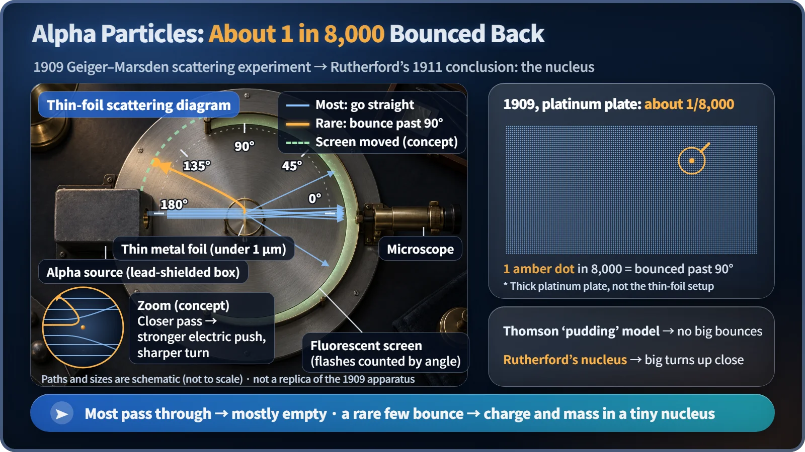

Nuclear & Radiation Basics · 002
A Pea Inside a Skyscraper — Why the Atom Is Mostly Empty Space
Blow an atom up to the height of a 555-meter tower and its nucleus is a pea, yet that pea carries more than 99.9% of the mass.
An atom is about 10⁻¹⁰ m across, yet its nucleus is only 10⁻¹⁵ to 10⁻¹⁴ m across, and that tiny nucleus holds more than 99.9% of the atom's mass. "Mostly empty space" means almost no mass, not a powerless vacuum: electron clouds still push back hard enough to keep your hand from passing through a desk. [1]
One pea in a 555-meter tower
Seoul's Lotte World Tower stands 555 meters tall. Blow a single atom up until it is as tall as that skyscraper, and how big is the nucleus at its center?
The answer is a pea. For hydrogen, the lightest atom, it comes out at about 9 millimeters; even for a heavy gold atom it is only about the size of a marble (roughly 3 centimeters). One pea floating inside a 555-meter building, and everything else is empty.
The weight is even more surprising. That one pea carries more than 99.9% of the atom's entire mass. The electrons filling the rest of the tower-sized space are so light that, in mass terms, they barely count. That is what people mean when they say the atom is mostly empty space. [2]
Measured in powers of ten, they're five ticks apart
Atoms and nuclei are so small that "X times bigger" doesn't really land, so scientists measure them in powers of ten, on a ruler where every major tick is ten times the last.

An atom is roughly 10⁻¹⁰ meters across, around 0.1 nanometers; several hundred thousand of them would fit across the width of a single hair. The nucleus is far smaller, at 10⁻¹⁵ to 10⁻¹⁴ meters, a range measured in femtometers (one femtometer is a quadrillionth of a meter). A single proton, the hydrogen nucleus, is about 1.7 femtometers across; a gold nucleus is about 14 femtometers. [3]
That puts the two 4 to 5 ticks apart on the ruler: a factor of 10,000 to 100,000, which is why people round it off as "the nucleus is one hundred-thousandth the size of the atom." That is a statement about length. Volume goes as length cubed, so the nucleus takes up only one trillionth to one quadrillionth of the atom's volume.
| Object | Typical diameter |
|---|---|
| Proton (hydrogen nucleus) | about 1.7 fm |
| Gold nucleus | about 14 fm |
| Hydrogen atom | about 0.11 nm |
| Gold atom | about 0.29 nm |
How do we know? Someone fired bullets at gold foil
Until the early 20th century, the atom was pictured as a "plum pudding": positive charge spread evenly through the whole atom like batter, with electrons dotted through it like raisins. If that were right, a small particle fired at an atom should slip through as if through soft batter, barely deflected.
In 1909, in Manchester, England, Hans Geiger and Ernest Marsden, working under Ernest Rutherford, put this to the test. They fired alpha particles (positively charged helium nuclei that shoot out of radioactive material) at an extremely thin metal foil, less than a micrometer thick, and counted the tiny flashes they made on a surrounding fluorescent screen, one by one, through a microscope.

Most alpha particles went straight through. But a very few were bent through large angles. When the team counted particles fired at a thick platinum plate that same year, roughly 1 in 8,000 was turned through more than 90 degrees and came back toward the side it was fired from. Rutherford later recalled that it was "almost as incredible as if you fired a 15-inch shell at a piece of tissue paper and it came back and hit you." [4]
In 1911 Rutherford drew his conclusion: the atom's positive charge and mass are concentrated in one tiny point, and only the rare alpha particles that pass right next to it are thrown back hard by the strong electric repulsion. That nearly all the others sailed straight through was evidence that the inside of the atom is almost empty. This was the first glimpse of the atomic nucleus. [5]
Electrons don't orbit like planets
Many people picture electrons circling the nucleus in neat, round orbits, like planets around the Sun. Real atoms don't work that way.
Quantum mechanics, worked out in the 1920s, showed that an electron's position can't be described by a fixed orbit, only by how likely you are to find it in a given place. So electrons are drawn as a faint haze around the nucleus, a probability cloud. The cloud has no sharp edge; it simply thins out with distance, so the "size" of an atom is a value set by convention. The 555-meter tower is less a building of walls and glass than a huge, misty cloud wrapped around a pea.
Then why doesn't my hand go through the desk?
When two objects get close, their outer electron clouds meet long before any nuclei could collide, and electrons, all carrying negative charge, push each other away strongly. On top of that, the Pauli exclusion principle (no two electrons can occupy the same state) means it takes an enormous amount of energy to force electron clouds to overlap. That is the solidity you feel under your fingertips. "Empty space" means almost no mass, not a powerless vacuum. [6]
Why nuclear engineers care about all that "empty space"
The neutrons that drive fission in a reactor carry no electric charge, so the push of the electron clouds hardly affects them. They glide between atoms and react only when they score a direct hit on a pea-sized nucleus. That is why reactor physicists calculate the chance of a neutron meeting a nucleus as the target area the nucleus presents. The unit of that area, the barn, is 10⁻²⁸ square meters, about the cross-sectional area of a single uranium nucleus. [3]
Key takeaways
An atom is about 10⁻¹⁰ m across and its nucleus 10⁻¹⁵ to 10⁻¹⁴ m, a difference of 10,000 to 100,000 times, yet more than 99.9% of the mass sits in the nucleus. The rare alpha particles that bounced back in 1909 revealed the nucleus; electrons form a probability cloud rather than planetary orbits; and objects can't pass through each other because of electron-cloud repulsion and the Pauli exclusion principle.